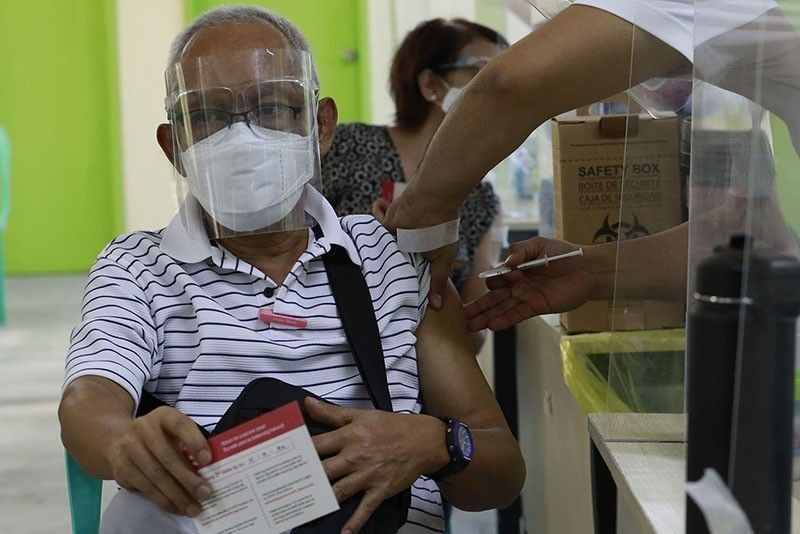

Covid19-Pandemic News >DOH seeks FDA approval for 4th COVID-19 shot for elderly, immunocompromised.
Author: Gaea Katreena Cabico | March 22, 2022
A senior citizen receives a COVID-19 jab at Pinyahan Elementary School in Quezon city during the continuation of inoculation of Sinovac vaccine on April 14, 2021.
MANILA, Philippines — The Department of Health has filed for Food and Drug Administration clearance of a fourth COVID-19 vaccine dose for the elderly and immunocompromised, an official said Tuesday.
“The DOH has already submitted an application to the FDA for the amendment of emergency use authorization [of COVID-19 vaccines to allow] fourth doses,” Health Undersecretary Maria Rosario Vergeire said partly in Filipino during a briefing.
“So we will wait for the decision of FDA on this and after that, we will discuss for the possible implementation,” she added.
The government’s vaccine expert panel earlier recommended giving a second COVID-19 booster shot to senior citizens and immunocompromised individuals. The elderly and people with comorbidities are at higher risk for severe illness from COVID-19.
Currently, the EUA of COVID-19 jabs in the country allows only the administration of primary shots and booster doses.
Over 65.2 million Filipinos have completed vaccination against COVID-19. Meanwhile, more than 11.6 million people have received boosters.
Tweet this article
"News That Hits Home, Hundred Stories, One Truth"
Copyright © Calacday & Escanilla News 2022. All Rights Reserved.